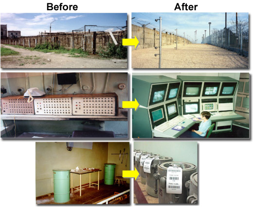

Quick Fact
Preventing terrorist access to weapons of mass destruction remains one of NNSA’s highest priorities.
NNSA helps to keep the world’s most dangerous materials out of the hands of the world’s most dangerous people by securing nuclear weapons and nuclear and radiological materials at their source, and improving security practices around the world. The photos below demonstrate some of the before and after security improvements implemented around the world.
